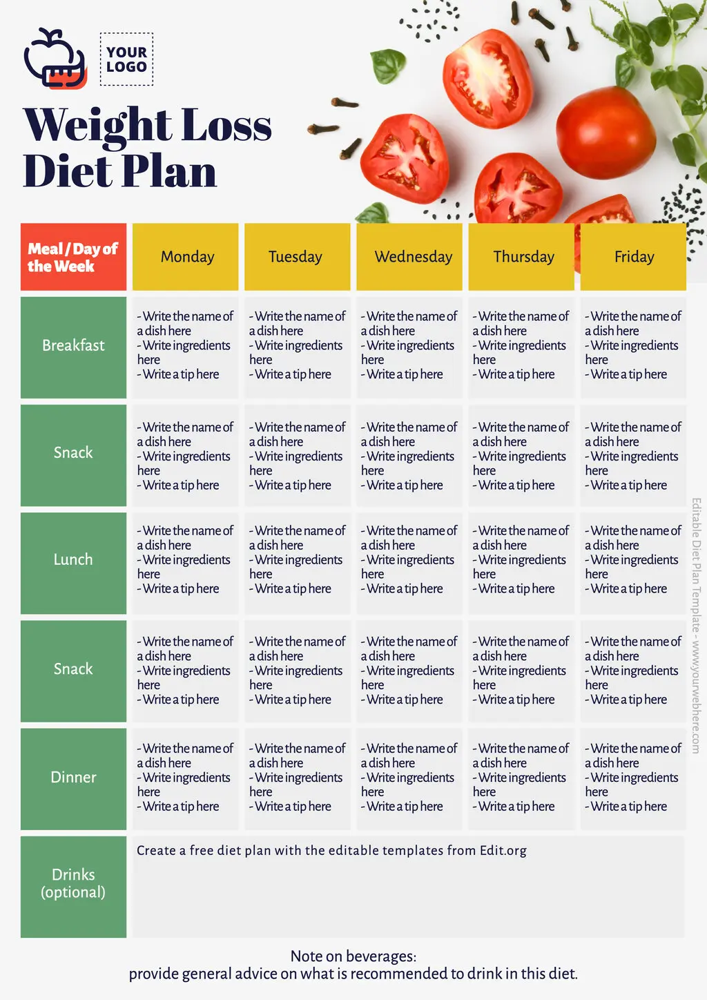

Personalized Diet Plans
Choose a diet that suits your body and goals.
How to Create a Personalized Diet Plan:
Consult with Professionals: Consider seeking guidance from a registered dietitian or nutritionist.
Track Your Food Intake: Monitor your current eating habits to identify areas for improvement.
Set Realistic Goals: Establish achievable goals that align with your individual needs and preferences.
Choose Nutrient-Dense Foods: Focus on incorporating a variety of fruits, vegetables, whole grains, lean proteins, and healthy fats.
Adjust Portion Sizes: Pay attention to portion sizes to manage calorie intake and prevent overeating.
Incorporate Variety: Include a wide range of foods to ensure you're getting all the necessary nutrients.
Make it Enjoyable: Select foods that you genuinely like and that fit your lifestyle.
